YarnSchedulerBackend: the driver's adapter to the ApplicationMaster
component index · Driver JVM, AM-facing endpoint · Apache Spark dada2a6
Overview
YarnSchedulerBackend communicates how many executors Spark wants and
why a particular executor disappeared. It is not the AM's YarnAllocator.
The driver sends Spark RPC messages to the ApplicationMaster
(AM); the allocator translates demand into YARN container requests and receives
grants from the ResourceManager (RM). Once an executor registers, the inherited
driver scheduler backend handles its free cores
and task launches without routing each task through the AM.
Flow at a glance
- Driver backend: Stops offering executor 3 and asks the AM why it disconnected.
- ApplicationMaster: Checks the container's exit status and reports YARN preemption.
- Task set manager: Can retry the interrupted task without counting it against the failure limit.
Watch for: A disconnect stops new offers immediately; it does not tell you why the executor disappeared.
Show the animated flow

Requirements analysis
The same task-scheduling code must work with a driver inside the AM container
(cluster mode) or outside it (client mode). Express demand as a target per
resource profile, not a stream of increments that could double-count pending
executors. Separate a request acknowledgement from a grant, and a broken network
connection from an application-caused executor failure.
Target contract · AM request handler · loss inquiry.
Component architecture and lifetime
| Deploy mode |
Who constructs, starts and stops the backend |
| Cluster |
YarnClusterManager creates YarnClusterSchedulerBackend. On start, it binds the AM's YARN application and attempt IDs, starts the base backend, and sets the initial expected executor count. Its stop(exitCode) signals the AM, then calls common backend shutdown. Factory · cluster lifecycle |
| Client |
The same factory creates YarnClientSchedulerBackend in the submitting driver. Its start starts the base, builds the driver host:port argument, submits the YARN application via Client, binds its application ID (no backend attempt ID), waits for the application to run, and starts a monitor. Unexpected application exit can stop the context. Normal stop signals the AM, stops the monitor and backend, then closes the client. Startup · monitor · stop |
TaskSchedulerImpl calls backend.start()/backend.stop(exitCode). The common
YARN constructor registers its YarnSchedulerEndpoint (YarnScheduler) in the
driver RpcEnv; separately the inherited executor-facing endpoint is a
YarnDriverEndpoint (CoarseGrainedScheduler). At AM startup,
AMEndpoint.onStart sends RegisterClusterManager(self) to YarnScheduler.
Common shutdown requests empty executor targets to avoid replacements, then
invokes the coarse-grained shutdown; a finally sets the stopped flag.
Driver calls · shutdown caller · adapter state ·
AM registration · shared shutdown.
Data models and concurrency
| Value |
Owner and interpretation |
appId, optional attemptId, amEndpoint: Option[RpcEndpointRef] |
Driver-side YARN identity and current AM route. The cluster-mode attempt string is a YARN attempt counter, not a stage or task attempt. Client mode can have a live YARN AM without setting this driver's attemptId. |
totalExpectedExecutors, totalRegisteredExecutors |
Initial expectation and inherited registration count. Startup readiness is registered >= expected * minRegisteredRatio (YARN default 0.8) or expiry of the base maximum wait. With five expected and no override, four registrations meet the ratio; this says nothing about four free task slots. |
Map[ResourceProfile, Int] plus locality and exclusions |
Desired executor totals, counts of locality-aware tasks by profile, preferred host counts by profile, and excluded nodes go to the AM. The allocator, not the driver endpoint, owns executorId ↔ containerId and pending/running/starting container accounting. |
The AM-facing endpoint is a ThreadSafeRpcEndpoint: its message handlers run
serially, but a forwarded ask completes asynchronously. The driver returns
the AM's Boolean or failure through the original RpcCallContext; it does
not hold that handler waiting for a container to be launched. The outer
requestTotalExecutors API does wait for the acknowledgement after leaving
its synchronized update. Identity and request fields ·
readiness tests · timeout · RPC forwarding ·
target publication · container identity.
Design patterns used
Adapter and proxy (structural). doRequestTotalExecutors adapts the
cluster-neutral backend contract to Spark's RequestExecutors message, removing
excluded hosts from preferences. YarnSchedulerEndpoint proxies the request
to the registered AM ref. This keeps Hadoop's allocation protocol out of
TaskSchedulerImpl and allows the AM ref to change across
attempts; unlike a direct call, it has an explicit "no AM registered" case,
timeouts, and replies that do not prove the work is finished.
Request construction · forwarding and errors.
API/interface definitions
| Caller and message |
Response or next action |
ExecutorAllocationManager → requestTotalExecutors(profileIdToTotal, localityCounts, hostCounts) |
Base backend resolves profile IDs and publishes totals. YARN sends RequestExecutors via the driver endpoint named YarnScheduler to the AM. A ready allocator updating or retaining its target yields true; no registered AM or no ready allocator yields false. A failed ask to a registered AM is propagated. Caller · YARN request · AM side |
Driver → doKillExecutors(Seq[executorId]) |
Forwards KillExecutors to the AM; allocator maps IDs to containers for release. This is not a KillTask(TID, ...). In this revision the AM's kill handler replies true even if it only warned that the allocator was not ready: it is not proof of release. Forwarder · AM handler · allocator release |
AM → RegisterClusterManager(amRef) / driver → AM Shutdown(exitCode) |
Registration installs the AM ref and calls reset(). Shutdown marks the AM/allocator as shutting down; it is distinct from executor-facing StopExecutor. Driver receive/send · AM receive |
Executor disconnect at YarnDriverEndpoint → AM GetExecutorLossReason(executorId) |
Disables offers for that executor, obtains the detailed reason asynchronously if possible, and posts RemoveExecutor(id, reason) to the executor-facing driver endpoint. The AM can also send RemoveExecutor unsolicited. Disconnect · remove forwarding |
Implementation notes: a target of five, not five more
- Suppose the driver sends a target of five for one resource profile.
The AM applies the target and can wake its allocation loop before replying;
the Boolean is an acknowledgement of demand. Sending the same target again
does not add five more executors. Target preparation · AM reply.
- If the allocator has two running, one starting and one pending request,
its deficit is
5 - 2 - 1 - 1 = 1. It prepares the missing request and its
allocate() call to the RM returns whatever containers YARN actually grants.
Capacity, locality and timing need not produce a grant on that call.
Deficit calculation · allocation heartbeat.
- An allocated executor container is launched on its node. The Spark executor
must still register and send
LaunchedExecutor to the
executor-facing endpoint before its CPUs
become available for task offers. A stage's missing shuffle parent or a
task's locality wait is unaffected by the acknowledgement in step 1.
Container launch and association · Spark-side launch acknowledgement.
Loss, late replies and AM replacement. If executor 3 disconnects, the
driver stops offering it with LossReasonPending. The AM can hold the
loss-reason request until container completion, or return a previously stored
reason. A YARN preemption is classified as not caused by the application; the
task-set manager can retry an ordinary running task
without charging that event to its failure limit. A missing AM or failed/timed
out inquiry instead produces ExecutorProcessLost; a disconnect alone does
not establish preemption. An AM disconnect clears the matching AM ref. On
registration/re-registration, reset removes lingering executors and resets the
optional allocation manager (the base handles held executor targets specially).
This repairs driver routing, not Python or job state after a dead driver.
Pending/failed inquiry · AM-side race ·
preemption classification · task accounting ·
AM ref removal · reset · stale executors.
Requests summarize demand per resource profile instead of making an RM request
per task. AM/RM allocation and executor startup introduce delay that faster
driver offer rounds cannot eliminate. Diagnostic: the driver warning
Attempted to request executors before the AM has registered! means the
driver had no AM route, not that a YARN queue rejected a container. If the
request was acknowledged, compare the AM's per-profile target/pending/starting/
running counts with executor registrations before attributing the delay to
task placement. No-AM branch · allocator counts and request log.